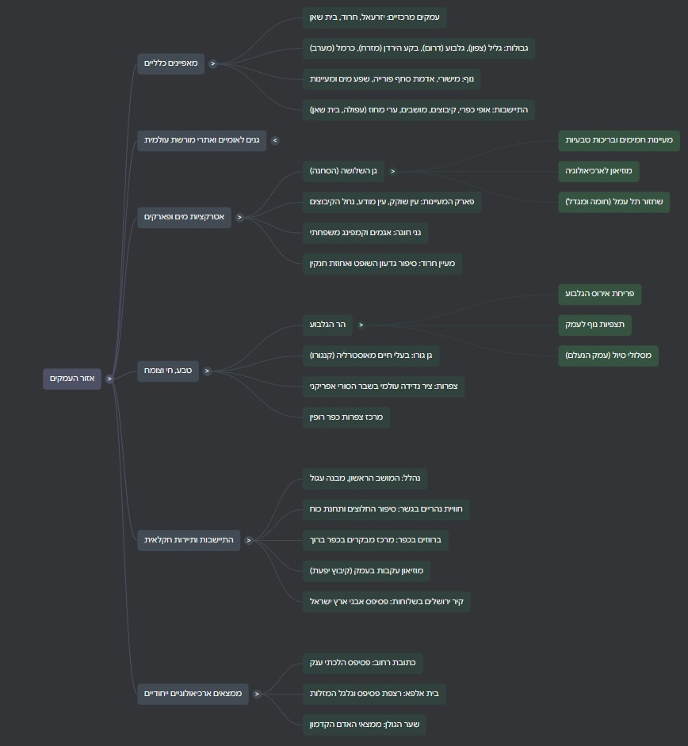

🎯 מטרות למידה
- למקם את אזור העמקים על המפה ולתאר את גבולותיו הטבעיים בארבעת הכיוונים.
- להסביר את הקשר בין תכונות הקרקע באזור לבין אופי ההתיישבות החקלאית-חלוצית שהתפתחה בו.
- לפרט אתרי מורשת, ארכיאולוגיה וטבע מרכזיים באזור (תל מגידו, בית שאן, בית שערים, בית אלפא) ואת ייחודם התיירותי.
- להסביר את תופעת "עמק המעיינות" ואת תרומת שפע המים לתיירות המים באזור.
- לתאר את מגמת המעבר מחקלאות לתיירות כפרית באזור, ואת תרומת רכבת העמק לכך.
- לענות על שאלות בגרות אמיתיות בסגנון "ציין/תאר/השוו" תוך שימוש בעובדות מדויקות מהחומר.
אזור העמקים אינו מקשה אחת, אלא רצף של עמקים מישוריים — עמק יזרעאל, עמק חרוד ועמק בית שאן — הנמשכים מבקעת הירדן במזרח ועד מישור חוף עכו במערב. המאפיין הפיזי הבולט ביותר הוא הניגוד הטופוגרפי: מרחב מישורי ופתוח, המוקף ותחום ברכסי הרים בולטים מכל עבריו:
| כיוון | גבול |
|---|---|
| צפון | הגליל התחתון |
| דרום | הרי הגלבוע |
| מזרח | בקע הירדן |
| מערב | הכרמל |
הקרקע בעמקים היא אדמת סחף פורייה, שנוצרה מסחף שהגיע מההרים המקיפים יחד עם מי הנגר העילי. שילוב של טופוגרפיה מישורית וקרקע עשירה הכתיב את אופיו של האזור כמרחב חקלאי מובהק לאורך ההיסטוריה.

אחד המאפיינים המרכזיים של אזור העמקים הוא צורת ההתיישבות בו: אזור כפרי ברובו, המורכב מקיבוצים, מושבים וישובים קהילתיים, כאשר החקלאות עדיין מהווה בו מרכיב נופי וכלכלי בולט. האזור מזוהה מאוד עם ההתיישבות החלוצית הציונית:
- נהלל — המושב העברי הראשון בארץ ישראל (1921), המפורסם בצורתו המעגלית הייחודית: תכנון "שולחן עגול" שבו כל בתי הישוב שווים זה לזה, וסביב הקבוצה משק חקלאי משותף.
- "חומה ומגדל" — העמקים היוו את ערש התקופה הזו בהתיישבות הציונית, עם ישובים כמו תל עמל (ניר דוד) ומעוז חיים. המורשת החלוצית מונצחת במוזיאונים מקומיים כמו מוזיאון ההתיישבות בקיבוץ יפעת ובית שטורמן בעין חרוד.
לצד המרחב הכפרי קיימות "ערי מחוז" המשמשות כמרכזים עירוניים עבור ישובי הסביבה — עפולה, בית שאן ומגדל העמק.
מישוריותו של האזור הפכה אותו באופן טבעי ל"מסדרון מעבר" ולצומת דרכים חשוב בין מזרח למערב לאורך כל הדורות — עובדה שהותירה בעמקים עושר ארכיאולוגי נדיר המקיף תקופות רבות.
| אתר | תקופה ומה מייחד אותו |
|---|---|
| תל מגידו (אתר מורשת עולמית UNESCO) | ישב על "דרך הים" הבינלאומית; עשרות שכבות התיישבות, מקדשים ומפעל מים אדיר. ממצאים מרכזיים: אורוות המלך (שלמה), נקבת מים בעומק רב, שער העיר. מזוהה גם בנצרות עם "אר-מגדון" (הר מגידו) — מקום קרב יום הדין העתידי לפי הברית החדשה. |
| בית שאן (סקיתופוליס) | עיר רומית-ביזנטית מפוארת: רחוב עמודים, בית מרחץ, תיאטרון, שדקן רומי ומזרקת מים — מהאתרים הארכיאולוגיים המרשימים בישראל, מיקום אסטרטגי בעולם העתיק ואדמה פורייה עשירת מעיינות. |
| בית שערים (גן לאומי) | מקום מושבם של רבי יהודה הנשיא והסנהדרין; הפך לאתר קבורה יהודי חשוב. הממצא הבולט: מערכת קברים תת-קרקעית ייחודית, שחלק מקבורותיה מעוטרות ומציינות ייחוס משפחות. |
| בית אלפא (בית כנסת עתיק, גן לאומי) | בית כנסת מהמאה ה-6 לספירה; רצפת פסיפס ובמרכזה גלגל המזלות המציג את תקופות השנה, ציורי מנורות וכתובת ביוונית ובעברית. |
| שער הגולן (קיבוץ) | ממצאי אדם קדמון מהתקופה הניאוליתית (כ-8,000 לפנה"ס) — כלי אבן ותכשיטים המעידים על ישוב שהתפרנס מציד וראשית חקלאות. |
נוסף על כן, האזור עשיר בממצאים אמנותיים נוספים — כמו כתובת רחוב בעין הנצי"ב.
המאפיין הבולט ביותר של "עמק המעיינות" (אזור בית שאן וחרוד) הוא שפע המים: ריבוי מעיינות הנובעים בטמפרטורה קבועה (כ-28 מעלות), המאפשר רחצה ונופש בכל ימות השנה. המים אינם רק משאב תיירותי אלא גם בסיס למערכת אקולוגית עשירה — צמחייה, דגה וציר נדידה חשוב לציפורים לאורך השבר הסורי-אפריקאי.
🌿 גן השלושה (הסחנה)
גן לאומי סביב בריכות מים טבעיות ומוצלות — יעד פופולארי לרחצה ולפיקניק, על שם שלושה מתיישבים שנרצחו באזור בשנות ה-30.
💧 פארק המעיינות
עין שוקק, עין מודע ונחל הקיבוצים — מערך מעיינות ואתרי טבע לרחצה ולטיולים משפחתיים; שמות המעיינות מנציחים את דוד נדב, ממייסדי תל עמל.
🏕️ גני חוגה
אגמים ואתר קמפינג משפחתי מבוססי מערכת בריכות שמימיהם ממלאים מעיינות טבעיים.
⛲ מעיין חרוד
קשור לסיפור גדעון השופט מהתנ"ך — מבחן בירור הלוחמים ("כל אשר ילוק בלשונו כאשר ילוק הכלב") שבו נבחרו 300 הלוחמים; לסמוך אחוזת חנקין ההיסטורית.
🌸 אירוס הגלבוע
תופעת פריחה נדירה וייחודית על הרי הגלבוע, מושכת מטיילים בעונת האביב; ההר עצמו נזכר בקינת דוד על שאול ויהונתן ("הרי בגלבע אל טל ואל מטר עליכם").
🦅 צפרות בשבר הסורי-אפריקני
האזור נמצא על ציר נדידת ציפורים עולמי; מרכז הצפרות בכפר רופין מאפשר תצפית על מעבר עונתי מסיבי.
בעוד שהאזור שומר על חזותו החקלאית (שדות מעובדים, בריכות דגים), מספר העוסקים בחקלאות מצטמצם עם השנים. במקומה מתפתחת תעשיית "תיירות כפרית" ענפה, הכוללת חדרי אירוח, נופש פעיל ואטרקציות המשלבות מורשת וטבע. דוגמה לשילוב בין ישן לחדש היא רכבת העמק, שחידושה בקו מחיפה לבית שאן (עוצר בתחנות יקנעם-כפר יהושע, מגדל העמק-כפר ברוך, עפולה ובית שאן) הפך לאטרקציה תיירותית בפני עצמה.
אתרים נוספים המשלבים בין תיירות חקלאית לחוויה משפחתית: גן גורו (בעלי חיים מאוסטרליה, כגון קנגורו), נהריים (סיפור החלוצים ותחנת הכוח ההיסטורית), כפר ברוך (מרכז מבקרים "ברווזים בכפר") ומוזיאון עקבות בעמק בקיבוץ יפעת.
שאלה 1 — א. מהי צורת ההתיישבות המרכזית באזור העמקים? ציינו שתי ערים ותפקידן. ב. שתי אטרקציות מים תיירותיות. ג. גורם משיכה נוסף (לא מים) ושני אתרים הקשורים אליו.
ב. שתי אטרקציות מים: גן השלושה (הסחנה) ופארק המעיינות (עין שוקק, עין מודע).
ג. גורם משיכה נוסף: ארכיאולוגיה. שני אתרים: תל מגידו ובית שאן (סקיתופוליס).
שאלה 2 — א. שלושה עמקים וצורת ההתיישבות. ב. שני אתרים ארכיאולוגיים ותיאורם. ג. שני אתרי טבע ותיאורם.
ב. תל מגידו — אתר מורשת עולמית עם עשרות שכבות התיישבות ומפעל מים; בית שאן (סקיתופוליס) — עיר רומית-ביזנטית עם תיאטרון ורחוב עמודים.
ג. פארק המעיינות — מעיינות בטמפרטורה קבועה לרחצה כל השנה; הגלבוע — הר הידוע בפריחת אירוס נדירה ובנוף פנורמי לעמק.
שאלה 4 — א. שלושה גורמי משיכה של אזור העמקים, ודוגמה לכל אחד. ב. היכן נמצא הפסיפס בתמונה, ומה רואים בו?
ב. הפסיפס נמצא בבית הכנסת העתיק בבית אלפא. רואים בו גלגל מזלות המציג את תקופות השנה, לצד ציורי מנורות וכתובת ביוונית ובעברית.
שאלה 9 (מותאם מבגרויות 2018, 2012) — תארו בקצרה שני אתרים באזור העמקים המתאימים לתייר המתעניין בארכיאולוגיה.
שאלה 7 (מותאם מבגרות 2014) — הסבירו מהו אופי ההתיישבות בעמקים. ציינו שמות של שתי ערים באזור וחשיבותה של אחת מהן.
מה ההבדל בין גן גורו לשאר אתרי הטבע באזור העמקים?
מבוסס על מפת למידה, מצגת NotebookLM "עמקי הצפון", ושאלות בגרות רשמיות (2012–2018) מתוך חומרי מגמת התיירות, כיתה יא׳.